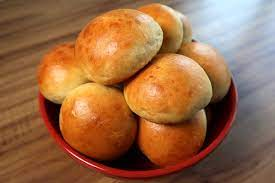

quantos tipos e formas de batatas existem?
muitos! como:
pão de batata

batata frita
batata recheada
e como prepará-las?
siga estas receitinhas!
pão de batata
Seu navegador não suporta a reprodução de vídeos.
batata frita
Seu navegador não suporta a reprodução de vídeos.
batata recheada
Seu navegador não suporta a reprodução de vídeos.